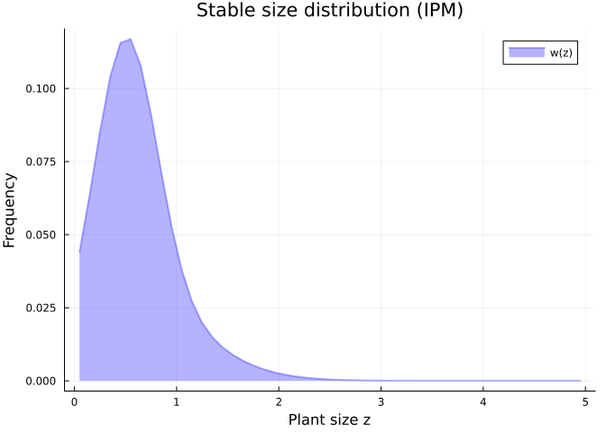
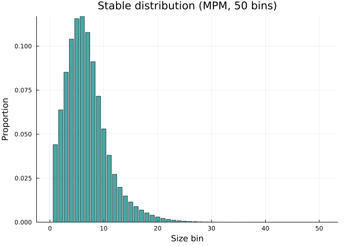
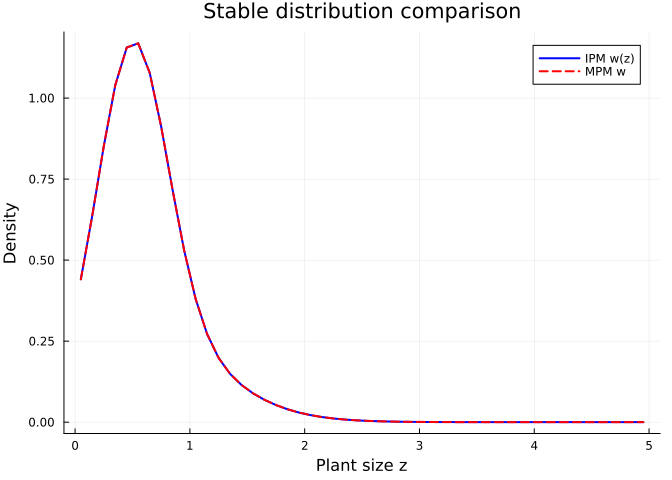
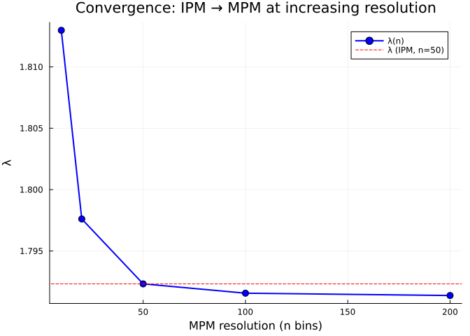

Lowering and Lifting: Connecting IPMs, MPMs, and Categorical Nets
Simon Frost
Overview
CategoricalPopulationDynamics.jl sits above IntegralProjectionModels.jl and MatrixProjectionModels.jl, providing a unified abstract layer. Lowering converts a categorical specification (projection net + transition data) into a concrete model object. Lifting goes the other direction — extracting a projection net from a concrete model.
This vignette demonstrates the full workflow: define a model categorically, lower it to both an IPM and an MPM, analyse both representations, and verify that they agree.
Setup
using CategoricalPopulationDynamics
import IntegralProjectionModels
import MatrixProjectionModels
using Catlab
using Catlab.CategoricalAlgebra
using Catlab.WiringDiagrams
using Catlab.Programs: @relation
using LinearAlgebra
using StructuredPopulationCore: lambda
using Plots
const IPM = IntegralProjectionModels
const MPM = MatrixProjectionModelsPrecompiling packages...
3930.0 ms ✓ IntegralProjectionModels
3999.4 ms ✓ IntegralProjectionModels → IntegralProjectionModelsCatlabExt
2 dependencies successfully precompiled in 11 seconds. 280 already precompiled.
Precompiling packages...
3958.7 ms ✓ CategoricalPopulationDynamics → CategoricalPopulationDynamicsIPMExt
1 dependency successfully precompiled in 7 seconds. 283 already precompiled.
Precompiling packages...
3925.8 ms ✓ CategoricalPopulationDynamics → CategoricalPopulationDynamicsMPMExt
1 dependency successfully precompiled in 6 seconds. 294 already precompiled.
MatrixProjectionModelsStep 1: Abstract Model Specification
We model a perennial herb with a single continuous state (plant size) and two transitions:
net = LabelledProjectionNet([:size],
:survive_grow => (:size => :size),
:reproduce => (:size => :size))
println("Abstract model:")
println(" States: ", sname(net))
println(" Transitions: ", tname(net))Abstract model:
States: [:size]
Transitions: [:survive_grow, :reproduce]Step 2: Define Vital Rates
The transition data provides the biological content — kernel functions for each transition:
# Survival probability (logistic)
s(z) = 1.0 / (1.0 + exp(-(0.5 + 0.3 * z)))
# Growth kernel (Gaussian)
g(z_new, z) = exp(-0.5 * ((z_new - (0.2 + 0.8 * z)) / 0.5)^2) / (0.5 * sqrt(2π))
# Fecundity
f_rate(z) = exp(0.1 + 0.2 * z)
recruit_dist(z_new) = exp(-0.5 * ((z_new - 0.5) / 0.3)^2) / (0.3 * sqrt(2π))
# Sub-kernels
P_kernel(z_new, z) = s(z) * g(z_new, z)
F_kernel(z_new, z) = f_rate(z) * recruit_dist(z_new)
transition_kernels = Dict(
:survive_grow => P_kernel,
:reproduce => F_kernel)Dict{Symbol, Function} with 2 entries:
:reproduce => F_kernel
:survive_grow => P_kernelStep 3: Lower to IPM
The IPMTarget specifies domain information needed to construct an IPMProblem:
ipm_domain = ContinuousProjectionDomain(0.0, 5.0, 50)
target_ipm = IPMTarget(:size => ipm_domain)
ipm_prob = lower(net, target_ipm, transition_kernels)
println("IPM Problem type: ", typeof(ipm_prob))IPM Problem type: IntegralProjectionModels.IPMProblem{StructuredPopulationCore.SimpleIPM, StructuredPopulationCore.DensityIndependent, StructuredPopulationCore.Deterministic, IntegralProjectionModels.CustomKernel{CategoricalPopulationDynamicsIPMExt.var"#composed_kernel#composed_kernel##0"{Dict{Symbol, Function}, Vector{Symbol}}, StructuredPopulationCore.ContinuousDomain{Float64}}, StructuredPopulationCore.ContinuousDomain{Float64}, Vector{Float64}, Nothing, Nothing}Solve and Analyse the IPM
ipm_sol = IPM.solve(ipm_prob, IPM.EigenAnalysis())
λ_ipm = IPM.lambda(ipm_sol)
println("λ (IPM) = ", round(λ_ipm, digits=6))λ (IPM) = 1.79232# Stable size distribution from IPM
w_ipm = IPM.stable_distribution(ipm_sol)
z_ipm = IPM.meshpoints(ipm_prob.domain)
plot(z_ipm, w_ipm,
xlabel="Plant size z", ylabel="Frequency",
title="Stable size distribution (IPM)",
label="w(z)", linewidth=2, color=:blue, fill=true, alpha=0.3)
Step 4: Lower to MPM
The MPMTarget produces a MatrixProjectionModel. We provide transition data as pre-computed matrices:
domain = ContinuousProjectionDomain(0.0, 5.0, 50)
A_P = left_kan_extension(P_kernel, domain)
A_F = left_kan_extension(F_kernel, domain)
transition_matrices = Dict(
:survive_grow => A_P,
:reproduce => A_F)
target_mpm = MPMTarget()
mpm = lower(net, target_mpm, transition_matrices)
println("MPM type: ", typeof(mpm))
println("Matrix size: ", size(Matrix(mpm)))MPM type: MatrixProjectionModels.MatrixProjectionModel{Float64, Matrix{Float64}}
Matrix size: (50, 50)Analyse the MPM
λ_mpm = MPM.lambda(mpm)
println("λ (MPM) = ", round(λ_mpm, digits=6))λ (MPM) = 1.79232# Stable stage distribution from MPM
w_mpm = MPM.stable_distribution(mpm)
bar(1:length(w_mpm), w_mpm,
xlabel="Size bin", ylabel="Proportion",
title="Stable distribution (MPM, 50 bins)",
legend=false, color=:teal, alpha=0.7)
Step 5: Verify Agreement
The IPM and MPM should give the same $\lambda$ when discretised at the same resolution:
println("λ (IPM): ", round(λ_ipm, digits=8))
println("λ (MPM): ", round(λ_mpm, digits=8))
println("Agreement: ", isapprox(λ_ipm, λ_mpm; atol=1e-6))λ (IPM): 1.79231987
λ (MPM): 1.79231987
Agreement: true# Compare stable distributions
plot(z_ipm, w_ipm ./ step_size(domain),
label="IPM w(z)", linewidth=2, color=:blue)
plot!(z_ipm, w_mpm ./ step_size(domain),
label="MPM w", linewidth=2, color=:red, linestyle=:dash)
xlabel!("Plant size z")
ylabel!("Density")
title!("Stable distribution comparison")
Step 6: Lift MPM Back to Projection Net
The lift operation extracts a projection net from a concrete model. Since a MatrixProjectionModel stores only the aggregated matrix $\mathbf{A}$, the original sub-transition decomposition is not recoverable — the lifted net has a single transition:
lifted_net = CategoricalPopulationDynamics.lift(mpm, ProjectionNetTarget())
println("Lifted net:")
println(" States: ", sname(lifted_net))
println(" Transitions: ", tname(lifted_net))Lifted net:
States: [:population]
Transitions: [:projection]Kan Extensions as Morphisms Between IPM and MPM
The left and right Kan extensions provide functorial morphisms between the IPM and MPM categories. We can use them to move between representations at different resolutions:
IPM → MPM at Multiple Resolutions
resolutions = [10, 20, 50, 100, 200]
lambdas = Float64[]
for n in resolutions
dom = ContinuousProjectionDomain(0.0, 5.0, n)
A = left_kan_extension(
(z_new, z) -> P_kernel(z_new, z) + F_kernel(z_new, z), dom)
push!(lambdas, lambda(A))
end
plot(resolutions, lambdas,
xlabel="MPM resolution (n bins)", ylabel="λ",
title="Convergence: IPM → MPM at increasing resolution",
marker=:circle, markersize=5,
label="λ(n)", linewidth=2, color=:blue)
hline!([λ_ipm], label="λ (IPM, n=50)", linestyle=:dash, color=:red)
MPM → IPM via Right Kan Extension
# Start from an MPM (matrix)
dom_coarse = ContinuousProjectionDomain(0.0, 5.0, 15)
A_coarse = left_kan_extension(
(z_new, z) -> P_kernel(z_new, z) + F_kernel(z_new, z), dom_coarse)
# Lift to piecewise kernel via right Kan extension
K_pw = right_kan_extension(A_coarse, dom_coarse)
# Re-discretise at finer resolution
dom_fine = ContinuousProjectionDomain(0.0, 5.0, 100)
A_refined = left_kan_extension(K_pw, dom_fine)
println("Original coarse (n=15): λ = ", round(lambda(A_coarse), digits=6))
println("Re-discretised (n=100): λ = ", round(lambda(A_refined), digits=6))
println("Direct fine (n=100): λ = ", round(lambda(left_kan_extension(
(z_new, z) -> P_kernel(z_new, z) + F_kernel(z_new, z), dom_fine)), digits=6))Original coarse (n=15): λ = 1.802431
Re-discretised (n=100): λ = 1.779078
Direct fine (n=100): λ = 1.791561The re-discretised matrix has the same $\lambda$ as the original coarse matrix — no information is gained by re-discretising a piecewise-constant kernel at finer resolution. To get a better approximation, one must start from the original smooth kernel.
Adjunction Diagnostics
full_K(z_new, z) = P_kernel(z_new, z) + F_kernel(z_new, z)
for n in [10, 20, 50, 100]
dom = ContinuousProjectionDomain(0.0, 5.0, n)
errs = adjunction_errors(full_K, dom; n_quad=500)
println("n=", lpad(n, 3),
": unit=", round(errs.unit, digits=12),
" counit=", round(errs.counit, digits=4),
" λ=", round(errs.lambda_matrix, digits=6))
endn= 10: unit=0.0 counit=0.3284 λ=1.81298
n= 20: unit=0.0 counit=0.157 λ=1.797609
n= 50: unit=0.0 counit=0.0632 λ=1.79232
n=100: unit=0.0 counit=0.032 λ=1.791561Complete Workflow: From Abstract to Analysis
Here is the full categorical workflow in one place:
# 1. SPECIFY (abstract projection net)
model_net = LabelledProjectionNet([:body_size],
:survival_growth => (:body_size => :body_size),
:sexual_reproduction => (:body_size => :body_size))
# 2. PARAMETERISE (kernel functions)
kernels = Dict(
:survival_growth => P_kernel,
:sexual_reproduction => F_kernel)
# 3. DISCRETISE (choose resolution)
domain = ContinuousProjectionDomain(0.0, 5.0, 50)
# 4. COMPOSE (via UWD)
uwd = @relation (z, z_new) begin
survival_growth(z, z_new)
sexual_reproduction(z, z_new)
end
K = compose_from_uwd(uwd, kernels, domain)
# 5. ANALYSE (as MPM)
println("=== Analysis Results ===")
println("Growth rate λ = ", round(lambda(K), digits=4))
println("Population ", lambda(K) > 1 ? "GROWING" : "DECLINING")
# 6. COARSEN (for fast computation)
coarse_dom = ContinuousProjectionDomain(0.0, 5.0, 10)
K_coarse = coarsen(K, domain, coarse_dom)
println("Coarse λ (n=10) = ", round(lambda(K_coarse), digits=4))
# 7. STRATIFY (spatial extension)
D = [0.9 0.1; 0.1 0.9]
K_spatial = stratify(K_coarse, D)
println("Spatial λ (2 patches) = ", round(lambda(K_spatial), digits=4))
# 8. DIAGNOSE (adjunction quality)
errs = adjunction_errors(
(z_new, z) -> P_kernel(z_new, z) + F_kernel(z_new, z), domain)
println("Adjunction unit error: ", round(errs.unit, digits=12))
println("Adjunction counit error: ", round(errs.counit, digits=4))=== Analysis Results ===
Growth rate λ = 1.7923
Population GROWING
Coarse λ (n=10) = 1.7945
Spatial λ (2 patches) = 1.7945
Adjunction unit error: 0.0
Adjunction counit error: 0.0629Schemas and target type hierarchy
For reference, the underlying Catlab schemas and lowering-target supertype are also exported, which is useful when building new ACSet types or custom lowering targets:
println("SchProjectionNet is a Catlab schema = ",
SchProjectionNet isa Catlab.Theories.Presentation)
println("SchLabelledProjectionNet is a Catlab schema = ",
SchLabelledProjectionNet isa Catlab.Theories.Presentation)
println("AbstractLoweringTarget isabstract = ",
isabstracttype(AbstractLoweringTarget))
println("\nConcrete <: AbstractLoweringTarget:")
for T in (IPMTarget, ContinuousIPMTarget, PSPMTarget,
FiniteStateDynamicsTarget, MPMTarget, StateDependentMPMTarget,
ProjectionNetTarget)
println(" ", rpad(string(T), 32), " <: AbstractLoweringTarget")
endSchProjectionNet is a Catlab schema = true
SchLabelledProjectionNet is a Catlab schema = true
AbstractLoweringTarget isabstract = true
Concrete <: AbstractLoweringTarget:
CategoricalPopulationDynamics.IPMTarget <: AbstractLoweringTarget
CategoricalPopulationDynamics.ContinuousIPMTarget <: AbstractLoweringTarget
CategoricalPopulationDynamics.PSPMTarget <: AbstractLoweringTarget
CategoricalPopulationDynamics.FiniteStateDynamicsTarget <: AbstractLoweringTarget
CategoricalPopulationDynamics.MPMTarget <: AbstractLoweringTarget
CategoricalPopulationDynamics.StateDependentMPMTarget <: AbstractLoweringTarget
CategoricalPopulationDynamics.ProjectionNetTarget <: AbstractLoweringTargetSummary
In this vignette we demonstrated the full lowering/lifting workflow:
- Abstract specification — projection net with named states and transitions
- Lowering to IPM —
lower(net, IPMTarget, kernel_functions)→IPMProblem - Lowering to MPM —
lower(net, MPMTarget, matrices)→MatrixProjectionModel - Agreement verification — IPM and MPM give identical $\lambda$ at the same resolution
- Lifting from MPM —
lift(mpm, ProjectionNetTarget)→LabelledProjectionNet - Kan extensions as morphisms — move between representations at different resolutions
- Adjunction diagnostics — unit and counit errors measure information loss
- Complete workflow — specify → parameterise → compose → analyse → coarsen → stratify → diagnose
The categorical framework provides a principled way to work across the IPM-MPM spectrum, with formal guarantees about the relationship between representations.